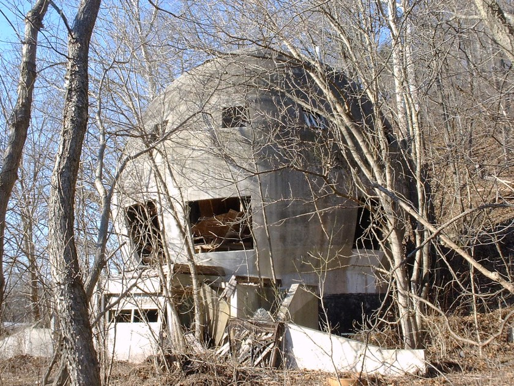
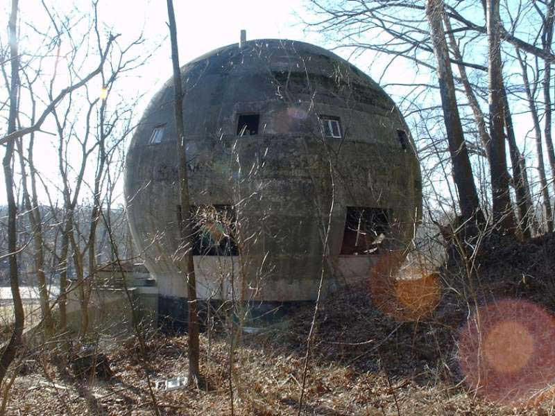
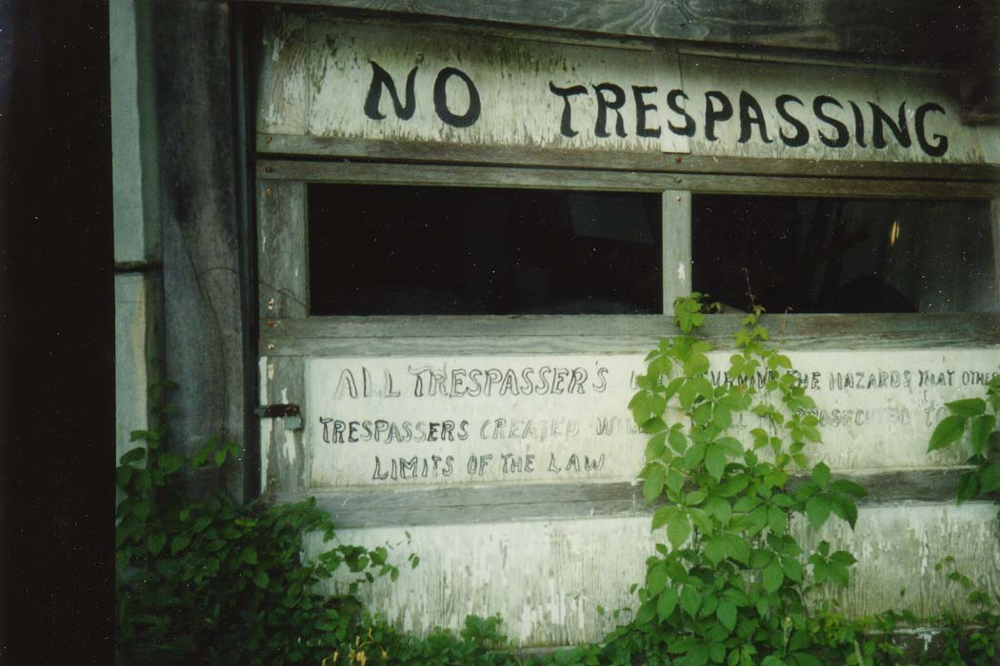
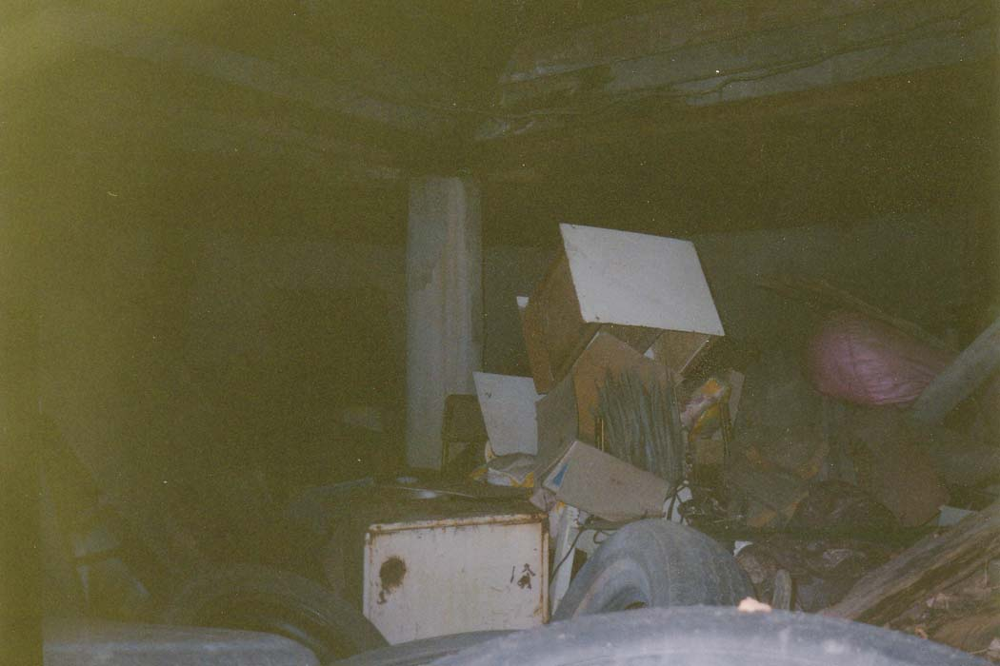

I had heard rumors of a building in Logan shaped like a giant golf ball, but I wasn't sure if it qualified as "forgotten" in any way or not, or if it was perhaps part of a miniature golf place or something like that. Then one day I stumbled upon it while trying to find a canoe rental place after a night in a Hocking Hills cabin. As you can see, it's a bizarre building. It's also completely abandoned.

The thing is about two stories tall, made entirely of poured concrete, and completely spherical above a rectangular foundation. I had no idea at all what it was once used for. My best guess would have had to be some kind of sports-related thing, maybe a golf supply place.

But my guess was way off, as I found out much later. My information came to me indirectly from the son of the guy who built the round house--a guy named Stewart. Locals referred to the house as "Stewart's Folly" because it took so much effort to build, and was apparently so uselessly bizarre. But Mr. Stewart had a use in mind when he designed the place.

The round house was intended as the prototype for a new, highly durable type of housing which would in theory be sold along hurricane-prone coasts and through Tornado Alley. Because of its lack of corners or flat exterior surfaces, the wind resistance on the building is almost nil, making it ideal for parts of the country where high winds cause problems for homeowners. The basic shell is also fireproof, as were the original Lexan windows, though the interior could burn. And it came with special fire escape plans that involved sliding through escape hatches and windows onto a rear scaffolding.
The house was begun in 1971 and finally completed in 1973. The shell was poured using a special homemade elevator system which involved the axle and wheel from a car. Two wooden shells were built--inside and out--and the concrete was poured in from the top. It hardened, the molds were removed, and the main part of the structure was done, with walls five inches thick on the sphere and eight inches thick at the base. From there they built the interior: two floors on top, complete with a porch, and a basement with a built-in garage.

The garage door is pictured above. As you can tell, the place has seen better days. It was never wired for power, and Stewart never moved his family into it as he'd intended. He had plans to attach a greenhouse in the back yard (before the foliage grew in wild, there were just two sycamore trees on the property). When it was finished he had an offer of $350,000 for the round house, which he did not accept. Unfortunately, he would never get an offer that good again. He stopped working on it and began to use it for storage, until some thieves from McArthur broke in and stole several of his tools.
The original Mr. Stewart suffered from heart disease and diabetes, and he died without ever seeing his innovations put to the test. Equally unfortunate is the fact that the original blueprints and design notes were lost in a fire. That makes the Logan round house a true original, never to be duplicated--even though a guy calling himself the Dome Doctor spent years producing very similar fiberglass homes, also round in shape, also weather-resistant. Stewart was just behind/ahead of his time.
Today Mr. Stewart's son owns the house. He lives close by, in Logan, and he drives out to check on the building from time to time, but nothing has been done with it for more than two decades. The slightly amusing warning scrawled onto the garage door ("ALL TRESPASSER'S WHO SURVIVE THE HAZARDS THAT OTHER...TRESPASSERS CREATED WILL ALL BE PROSECUTED TO THE LIMITS OF THE LAW") has done little to keep local kids from exploring the place. Time and weather (ironically) have also broken holes in the upper floors and dropped most of what was left into the basement.

It was high summer when I visited the Round House, and it was buried in weeds and poison ivy. This, combined with the heat and the wasps, made exploration pretty unpleasant. In the winter I kept looking forward to summer, but now I think fall is the best time to explore things like this. While I was there I brushed a black insect off my hand and ended up having my knuckle swell up because whatever it was bit me.
But it was worth the trip just to see something like this. It's a truly original piece of architecture, and a testament to the ingenuity of one Hocking County man with a dream, some concrete, and a whole lot of spare time on his hands.
UPDATE: Contrary to a previous statement, the Round House is NOT gone. People sometimes e-mail me to tell me a place has obviously been demolished because they can't find it, and I've learned my lesson about taking such tips at face value.
Illicit Ohio: Logan Round House
Back